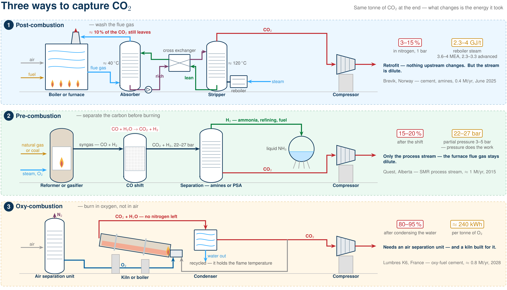
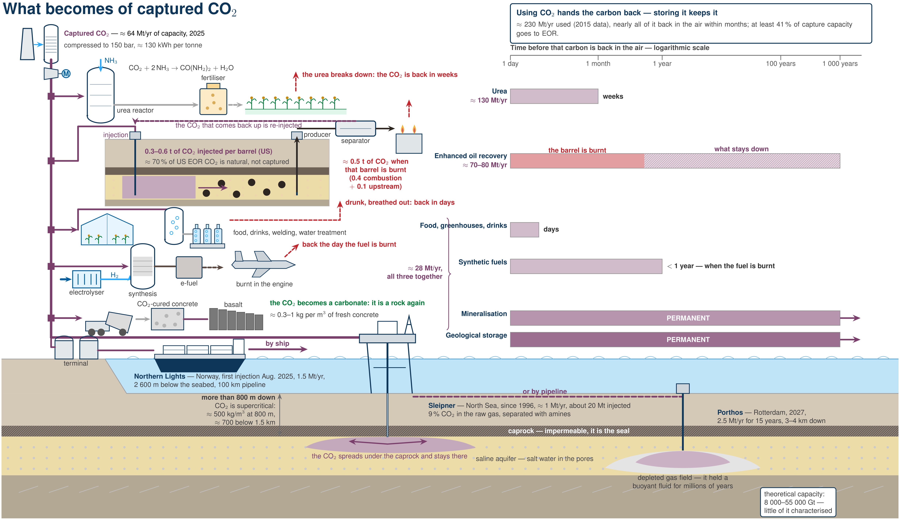

Capter le CO₂ d'une usine : d'où il vient, comment on l'attrape, ce qu'on en fait, ce que ça coûte
D'où vient le CO₂ qu'on peut capter et pourquoi sa concentration dans le flux commande le coût : 16 à 37 $/t pour un CO₂ déjà pur, 60 à 120 pour une cimenterie, 135 à 330 dans l'air. Comment on l'attrape (amines, précombustion, oxycombustion, captage dans l'air) et l'énergie que cela demande, ce qu'on en fait (utiliser le rend à l'air, seul le stockage géologique le garde) et ce que coûtent transport et stockage. Enfin, ce que cela change pour un industriel face à un prix du CO₂ : tonne captée et tonne évitée, CO₂ non capté qui paie toujours le quota, prix de l'électricité qui fait passer du captage à l'hydrogène.
1. La question et la réponse
La question. Une cimenterie ou une aciérie peut-elle continuer à émettre du CO₂ dans ses fours, mais l’attraper avant qu’il ne sorte de la cheminée ? Et à partir de quel prix du CO₂ a-t-elle intérêt à le faire ?
La réponse, en trois phrases. On sait séparer le CO₂ d’une fumée, le comprimer et l’enfouir à plus de 800 m sous terre : la Norvège le fait en mer du Nord depuis 1996, mais tout ce qu’on capte dans le monde ne fait encore que 0,17 % des émissions, et surtout sur des flux de CO₂ déjà presque purs. Le coût dépend d’abord de la concentration du CO₂ dans le flux : 16 à 37 dollars la tonne pour un CO₂ déjà pur, 60 à 120 pour une cimenterie, 135 à 330 dans l’air, transport et stockage en plus. Pour un industriel, le captage devient rentable quand le prix du CO₂ dépasse son coût par tonne évitée, plus élevé que le coût par tonne captée : 135 à 215 € en cimenterie, contre un quota européen autour de 75 € la tonne en 2025.
Le plan. La section 2 donne le vocabulaire. La section 3 montre d’où vient le CO₂ qu’on peut capter et pourquoi sa concentration commande tout. La section 4 explique comment on l’attrape, et ce que cela coûte en énergie. La section 5 dit ce qu’on fait du CO₂ capté : l’utiliser ou l’enfouir. La section 6 donne les coûts par tonne, la section 7 ce que cela change pour un industriel face à un prix du CO₂, et la section 8 ce qu’il faut retenir.
2. Le vocabulaire
Captage et stockage du CO₂ (en anglais carbon capture and storage, CCS) : on sépare le CO₂ d’un flux de gaz, on le comprime, on le transporte et on l’injecte dans une roche profonde. Quand on l’utilise au lieu de l’enfouir, on parle de CCUS (le U pour utilisation).
Tonne captée, tonne évitée. Capter demande de l’énergie, qui émet souvent du CO₂. Une tonne captée n’est donc pas tout à fait une tonne évitée. C’est le coût par tonne évitée, plus élevé, qui se compare à un prix du CO₂.
Concentration et pression partielle. La concentration est la part de CO₂ dans le gaz, en pourcentage du volume. La pression partielle est cette part multipliée par la pression du gaz. Plus elle est haute, plus le CO₂ se sépare facilement : c’est elle qui commande le coût (ETC, 2022).
Taux de captage. La part du CO₂ d’un flux qu’une installation retient, souvent annoncée à 90 %.
Fossile ou biogénique. Le CO₂ d’une cimenterie sort d’une pierre, celui d’une chaudière à charbon d’un gisement : il est fossile. Le CO₂ d’une fermentation vient d’une plante qui l’avait pris dans l’air : il est biogénique. Enfouir le premier évite une émission. Enfouir le second retire du CO₂ de l’atmosphère : c’est une émission négative.
3. D’où vient le CO₂ qu’on peut capter

Les sources se rangent en trois familles, selon la concentration du CO₂ dans le flux qui sort de l’usine.
Le CO₂ déjà pur. Une usine d’ammoniac, une distillerie d’éthanol ou une unité de traitement du gaz naturel rejettent un flux de CO₂ presque pur, parce que le procédé l’exige : le gaz naturel ne se vend pas avec 9 % de CO₂, la teneur du gisement norvégien de Sleipner. Ici, « capter » se réduit à comprimer et à transporter.
Le CO₂ concentré mais mélangé. Les fumées d’un four de cimenterie contiennent 14 à 33 % de CO₂, le gaz d’un haut fourneau 20 à 27 %, les fumées d’une centrale à charbon 13 à 15 % (ETC, 2022). Le reste est surtout de l’azote, apporté par l’air de combustion. Il faut séparer les deux.
Le CO₂ dilué. Les fumées d’une turbine à gaz en contiennent 3 à 4 %, celles d’une cuve d’électrolyse d’aluminium 1 à 2 %. L’air en contient 0,042 % (423 parties par million en moyenne mondiale en 2024, NOAA, 2026). Ici, l’énergie de séparation domine tout.
La pression compte autant que la concentration. Dans une usine d’hydrogène par vaporeformage du gaz, le flux de procédé ne contient que 15 à 20 % de CO₂, mais sous 22 à 27 bar. Sa pression partielle, 3 à 5 bar, est dix à trente-cinq fois celle d’un four de cimenterie à 1 bar (ETC, 2022). C’est pourquoi capter le CO₂ de l’hydrogène coûte moins cher que celui du ciment, alors que sa concentration est plus basse.
Ce qu’on capte aujourd’hui. En juillet 2025, 77 installations de captage étaient en service dans le monde, pour une capacité de 64 Mt de CO₂ par an (GCCSI, 2025). C’est 0,17 % des 37,8 Gt émises par l’énergie et l’industrie en 2024 (AIE, 2025). Environ 64 % de cette capacité traite du gaz naturel : du CO₂ qu’il fallait retirer de toute façon. Sur les cheminées industrielles, tout commence : la cimenterie de Brevik, en Norvège, capte depuis juin 2025 0,4 Mt par an, la moitié de ses émissions (Heidelberg Materials, 2025).
4. Comment on l’attrape

Il y a trois façons d’obtenir un flux de CO₂ pur. Elles finissent toutes par le même compresseur. Ce qui change est la concentration du flux à traiter, et donc l’énergie qu’il faut pour séparer le CO₂.
4.1 Postcombustion : laver les fumées aux amines
On ne change rien à l’usine : on traite les fumées à la sortie. C’est la seule voie qui s’ajoute à une usine existante, et c’est celle de Brevik.
La technique de référence est le lavage aux amines, utilisée dans le traitement du gaz depuis les années 1930. Une amine est un solvant qui fixe le CO₂ à froid et le relâche à chaud. Dans une première colonne, vers 40 °C, le solvant capte le CO₂ de la fumée. Dans une seconde, chauffée vers 120 °C par un rebouilleur à vapeur, il le relâche, pur, puis repart vers la première.

L’énergie, c’est le rebouilleur. Avec le solvant classique (la monoéthanolamine, MEA) et 90 % de captage, il demande 3,6 à 4,0 GJ de chaleur par tonne captée. Les solvants plus récents descendent à 2,3 à 3,3 GJ (Bui et al., 2018). La compression du CO₂ de 1 à 150 bar, pour le transporter, ajoute 132 kWh d’électricité, soit 0,48 GJ (Keith et al., 2018). Le total est d’environ 4,3 GJ par tonne.
Le minimum thermodynamique est bien plus bas. Séparer 90 % du CO₂ d’une fumée à 12 % demande au minimum 0,16 GJ par tonne, soit 44 kWh. Le procédé réel dépense donc 20 à 25 fois plus en énergie. Attention à la convention : la chaleur basse du rebouilleur vaut moins que du travail. Comptée en travail équivalent, l’écart est d’environ 10 fois.
4.2 Précombustion : séparer le carbone avant de brûler
On transforme d’abord le gaz naturel ou le charbon en gaz de synthèse, un mélange de monoxyde de carbone (CO) et d’hydrogène. On fait ensuite réagir le CO avec de la vapeur d’eau : il devient du CO₂ et de l’hydrogène (la réaction de shift). On sépare enfin le CO₂, sous pression, ce qui coûte peu d’énergie.
C’est la voie des usines d’hydrogène et d’ammoniac : Quest, en Alberta, capte ainsi plus d’un million de tonnes par an depuis 2015 (Shell). Mais seul le flux de procédé est capté : les fumées du four qui chauffe le reformeur restent diluées. Le reformage autotherme, qui brûle à l’oxygène dans le réacteur, n’a plus qu’une sortie de CO₂, dont on capte plus de 90 %.
4.3 Oxycombustion : brûler à l’oxygène pur
On remplace l’air de combustion par de l’oxygène pur. Sans azote, les fumées ne contiennent plus que du CO₂ et de la vapeur d’eau, que l’on condense. Il reste un CO₂ presque pur.
Il faut une unité de séparation d’air (environ 240 kWh d’électricité par tonne d’oxygène, Keith et al., 2018) et surtout un four conçu pour cela : la voie convient aux usines neuves. La cimenterie d’Eqiom à Lumbres (projet K6, avec Air Liquide) captera ainsi environ 8 Mt de CO₂ sur dix ans à partir de 2028 (Air Liquide, 2022). Le gain est dans l’investissement : 49 € par tonne de clinker pour capter derrière un four à oxycombustion ou électrique (sans air de combustion lui non plus), contre 270 € pour des amines derrière un four classique, un facteur 5,5 (Raillard-Cazanove et al., 2025).
4.4 Capter dans l’air, et dans la biomasse

Dans l’air (en anglais direct air capture, DAC). À 423 ppm, une tonne de CO₂ est diluée dans 1,3 million de mètres cubes d’air. Le minimum thermodynamique n’est que de 0,455 GJ par tonne (House et al., 2011), mais les procédés réels dépensent 5,5 à 9,5 GJ (AIE, 2022) : vingt fois plus. L’énergie part à brasser l’air. Les installations restent minuscules : 0,045 Mt par an en 2025 dans le monde (GCCSI, 2025), moins d’une minute des émissions mondiales.
Dans la biomasse (bioénergie avec captage et stockage, BECCS). Si l’on fait fermenter une plante et qu’on enfouit son CO₂, le carbone fait le chemin air, plante, sous-sol. Le flux d’une fermentation est presque pur : c’est le captage le moins cher, et il est négatif. La distillerie d’ADM à Decatur (Illinois) en injecte 1 Mt par an depuis 2017, à condition que le stockage tienne : elle a arrêté un an en 2024-2025 après deux fuites de puits (US EPA).
L’énergie, en résumé, par tonne de CO₂ :
| Procédé | Énergie réelle | Minimum thermodynamique |
|---|---|---|
| Amines, solvant classique (MEA), fumée à 12 % | 3,6 à 4,0 GJ de chaleur + 0,48 GJ de compression | 0,16 GJ |
| Amines, solvants récents | 2,3 à 3,3 GJ de chaleur | 0,16 GJ |
| Air, sorbant solide | 7,2 à 9,5 GJ (chaleur et électricité) | 0,455 GJ |
| Air, solvant liquide | 5,5 à 8,8 GJ | 0,455 GJ |
5. Ce qu’on en fait : utiliser ou enfouir

5.1 Utiliser le CO₂ le rend à l’atmosphère
Le monde utilise environ 230 Mt de CO₂ par an (AIE, 2019, données de 2015) : 130 Mt pour l’urée, un engrais, 70 à 80 Mt pour la récupération assistée du pétrole, le reste pour les boissons, les serres et la métallurgie. Le carbone de l’urée ressort au champ en quelques semaines, celui d’une boisson en quelques jours, celui d’un carburant de synthèse en moins d’un an. Seuls les matériaux de construction le gardent des millions d’années (AIE, 2019). D’où la formule de l’Agence internationale de l’énergie (AIE) : « un CO₂ utilisé n’est pas un CO₂ évité ». Idée reçue : le béton frais, où l’on injecte du CO₂, n’en stocke que 0,3 à 1,1 kg par mètre cube, moins de 1 % du CO₂ de son ciment (CarbonCure).
La récupération assistée du pétrole (en anglais enhanced oil recovery, EOR) injecte du CO₂ dans un gisement en fin de vie pour pousser le pétrole vers le puits. Aux États-Unis, on injecte 0,3 à 0,6 t de CO₂ par baril, et ce baril émet environ 0,5 t une fois brûlé (AIE, 2019b) : le bilan n’est négatif que dans les meilleurs cas. Au moins 41 % de la capacité de captage mondiale déclare l’EOR comme destination (GCCSI, 2025).
5.2 Le stockage géologique le retire
Au-delà de 800 m de profondeur, le CO₂ devient dense comme un liquide : environ 500 kg par mètre cube à 800 m, 700 au-delà de 1,5 km (GIEC, 2005). On l’injecte sous une roche couverture imperméable, dans un aquifère salin (une roche poreuse remplie d’eau salée) ou dans un gisement de gaz épuisé.
- Sleipner (Norvège) stocke environ 1 Mt par an depuis 1996, plus de 20 Mt en tout. Le motif était économique : une taxe norvégienne sur le CO₂ émis en mer, instituée en 1991, rendait le projet rentable (AIE, 2020).
- Northern Lights (Norvège) a injecté sa première tonne le 25 août 2025. Il reçoit par bateau le CO₂ de la cimenterie de Brevik et d’autres usines, et l’injecte à 2 600 m sous la mer du Nord : 1,5 Mt par an, puis 5 Mt en 2028.
La capacité théorique mondiale est de 8 000 à 55 000 Gt (AIE, 2022b), très au-delà du besoin, mais encore peu caractérisée.
5.3 Transporter et stocker coûte à part
Transport et stockage font environ un quart du coût total de la chaîne (AIE, 2020). Les ordres de grandeur, en dollars de 2019 par tonne :
| Maillon | Coût |
|---|---|
| Gazoduc à terre, par 250 km | 1 à 12 $/t selon le débit |
| Gazoduc en mer | 40 à 70 % plus cher |
| Bateau, 100 à 1 000 km | 21 à 29 $/t |
| Stockage à terre (États-Unis) | moins de 10 $/t pour la moitié du potentiel |
| Stockage en mer | moins de 35 $/t pour la moitié du potentiel |
Source : AIE (2020). Pour la chaîne complète, les études vont d’environ 20 €/t dans les modèles (AIE, 2020 ; Raillard-Cazanove et al., 2025) à 50 €/t stockée pour France Stratégie (2023) et 120 à 160 €/t pour Dunkerque, qui doit exporter son CO₂ par bateau (ADEME, 2024).
6. Ce que ça coûte par tonne, selon la source

Le coût du captage suit la dilution du flux. L’Agence internationale de l’énergie le donne par tonne captée, compression comprise, transport et stockage exclus :
| Source | CO₂ dans le flux | Coût du captage ($₂₀₁₉/t captée) |
|---|---|---|
| Traitement du gaz naturel | ≈ 99 % | 16 à 28 |
| Éthanol, ammoniac | ≈ 99 % | 25 à 37 |
| Hydrogène par vaporeformage | 15 à 20 %, sous 22 à 27 bar | 50 à 80 |
| Acier (haut fourneau) | 20 à 27 % | 60 à 100 |
| Ciment | 14 à 33 % | 60 à 120 |
| Centrale électrique (charbon ou gaz) | 3 à 15 % | 50 à 100 |
| Air | 0,042 % | 135 à 330 |
Sources : AIE (2020), concentrations ETC (2022). Pour l’air, le prix réellement payé est bien plus haut : Climeworks vend ses crédits de retrait autour de 1 000 € la tonne.
De la tonne captée à la tonne évitée. France Stratégie (2023) a fait le calcul complet pour une cimenterie. Le captage-stockage y coûte 135 à 215 € (de 2018) par tonne évitée : 60 à 120 € pour l’installation de captage, 60 à 80 € pour le transport et le stockage, 15 à 20 € pour transporter le clinker jusqu’aux usines équipées. Le transport-stockage pèse plus que ses 50 € par tonne stockée, parce qu’on stocke plus de tonnes qu’on n’en évite. Dans le même rapport, remplacer une partie du clinker par des argiles calcinées coûte environ 15 € par tonne évitée : le captage n’est pas le premier levier du ciment.
Deux repères pour comparer. Le quota du marché européen du carbone (EU ETS, le système d’échange de quotas d’émission de l’Union européenne) valait environ 75 € la tonne en 2025 (73 € en moyenne des enchères de l’année, EASA, 2026). La valeur de l’action pour le climat, la valeur qu’attache l’État français à une tonne évitée pour évaluer ses politiques, est de 250 € (de 2018) en 2030 (France Stratégie, 2021). Le CO₂ déjà pur passe sous le quota. Presque tout le reste passe au-dessus.
Qui paie la différence. Aux États-Unis, le crédit d’impôt 45Q paie 85 $ par tonne captée sur une usine et 180 $ dans l’air (Carbon Capture Coalition, 2025). En Europe, le Fonds pour l’innovation de l’Union a donné 150 M€ à Lumbres et 131 M€ à l’extension de Northern Lights, et l’État norvégien paie les deux tiers de son programme Longship. Sans ces soutiens, aucun des projets cités ici n’aurait été construit.
Une idée reçue : le taux de captage annoncé. Les 90 % des projets sont une performance de conception, pas une mesure. La centrale à charbon de Boundary Dam (Canada), conçue pour 90 %, a capté 57 % de son CO₂ en cumul jusqu’à fin 2023 ; l’usine de gaz de Gorgon (Australie), tenue à 80 %, n’en a stocké que 25 % en 2024-2025 (IEEFA). Sleipner et Quest, eux, tiennent leurs chiffres.
7. Ce que ça change pour un industriel face à un prix du CO₂
Les mini-projets du cours posent la question sous deux angles : le parc industriel français, qui choisit ses procédés selon le prix du CO₂, et une aciérie à réduction directe, qui choisit chaque heure entre hydrogène, gaz et gaz avec captage.
Comparer un coût par tonne évitée à un prix par tonne émise. Un industriel paie un quota pour chaque tonne émise. Capter lui économise ce quota sur chaque tonne évitée, et lui coûte le captage, le transport et le stockage. Le captage l’emporte quand le prix du CO₂ dépasse ce coût par tonne évitée. Sur un flux pur (ammoniac, éthanol), c’est déjà le cas au prix actuel. En cimenterie, il faut un prix proche de la valeur de l’action pour le climat. Pour la méthode du coût d’abattement et du prix de bascule, voir Ce que coûte chaque route.
Le CO₂ non capté paie toujours. Une route avec captage ne coupe qu’une partie des émissions. Sur un haut fourneau, le modèle de Raillard-Cazanove et al. (2025) ne capte que 57 % du CO₂. Le reste paie toujours le quota, une facture qui grandit avec le prix du CO₂. Le captage gagne donc souvent à prix modéré, puis perd face à une route sans émissions résiduelles, comme l’acier à l’hydrogène, quand le prix monte et que l’électricité est bon marché. Les routes et leurs émissions sont décrites dans Les routes de décarbonation, et l’hydrogène dans Les usages de l’hydrogène.
Le captage dépend peu du prix de l’électricité. Les amines consomment surtout de la chaleur, et un peu d’électricité pour la compression. Leur coût bouge peu avec l’électricité, à l’inverse de l’hydrogène par électrolyse. Le prix de l’électricité qui fait passer l’usine du captage à l’hydrogène est donc la variable clé.
Le transport et le stockage sont une hypothèse à faire varier. Entre 20 €/t dans les modèles et 120 à 160 €/t pour Dunkerque, l’écart est du même ordre que le coût du captage lui-même.
Un captage compté gratuit fausse le verdict. Un modèle qui laisse l’usine passer au « gaz avec captage » sans payer l’installation surestime cette option. Il faut encadrer son coût : 60 à 100 $ par tonne captée pour l’acier, plus le transport, le stockage et le quota sur la part non captée.
Le captage se décide en construisant le four. Un four à oxycombustion divise l’investissement de captage par 5,5 (section 4.3), mais un four de clinker ne se remplace pas chaque année. Un prix du CO₂ annoncé trop tard laisse des fours sans captage tourner des décennies : c’est le verrouillage.
Ce qu’un prix du CO₂ élevé peut faire. Dans le modèle de Raillard-Cazanove et al. (2025), un prix de 150 € la tonne réduit les émissions de l’industrie européenne de 65 à 85 % selon le prix de l’électricité, et un prix de 300 € de 97 %. Au-delà de 300 €, le prix n’a plus d’effet. Entre 2030 et 2040, le CO₂ capté y est stocké plutôt qu’utilisé, faute de débouchés.
8. Ce qu’il faut retenir
La concentration commande tout. De 0,042 % dans l’air à presque 100 % dans une usine d’ammoniac, le coût du captage va de 16 à plus de 300 dollars la tonne. La pression compte aussi.
Capter coûte de l’énergie. Environ 4 GJ par tonne avec des amines, 20 fois le minimum thermodynamique, et le double dans l’air. Une tonne captée n’est donc pas une tonne évitée.
Seul le stockage retire le carbone. Utiliser le CO₂ dans l’urée, une boisson ou un carburant le rend à l’air en quelques jours à moins d’un an. Le stockage géologique le garde, comme à Sleipner depuis 1996.
Le captage reste petit et subventionné. 64 Mt par an de capacité, 0,17 % des émissions mondiales, surtout sur du CO₂ déjà pur. En cimenterie, il coûte 135 à 215 € par tonne évitée, au-dessus du quota actuel.
Pour un industriel, quatre chiffres décident : le coût du captage par tonne évitée, le transport et le stockage, la part du CO₂ qui reste non captée et paie le quota, et le prix de l’électricité qui rend possible la route concurrente.
9. Sources
- ADEME, note pour la DGEC sur la zone industrielle bas carbone de Dunkerque, 2024 (transport et stockage, 120 à 160 €/t).
- AIE, Putting CO₂ to Use, 2019, p. 4 à 8, https://iea.blob.core.windows.net/assets/50652405-26db-4c41-82dc-c23657893059/Putting_CO2_to_Use.pdf.
- AIE (2019b), Is carbon capture too expensive?, commentaire du 11 avril 2019, https://www.iea.org/commentaries/is-carbon-capture-too-expensive.
- AIE, CCUS in Clean Energy Transitions, 2020, figures 3.4, 3.6, 3.7 et p. 26, 102, 116, https://iea.blob.core.windows.net/assets/181b48b4-323f-454d-96fb-0bb1889d96a9/CCUS_in_clean_energy_transitions.pdf.
- AIE, Direct Air Capture 2022, https://www.iea.org/reports/direct-air-capture-2022/executive-summary.
- AIE (2022b), CO₂ Storage Resources and their Development, 2022, https://www.iea.org/reports/co2-storage-resources-and-their-development/executive-summary.
- AIE, Global Energy Review 2025, https://www.iea.org/reports/global-energy-review-2025/co2-emissions.
- Air Liquide, communiqué du 1er avril 2022 (projet K6 à Lumbres), https://www.airliquide.com/group/press-releases-news/2022-04-01/air-liquide-and-eqiom-project-northern-france-selected-european-innovation-fund.
- 1PointFive, projet Stratos (Ector County, Texas), https://www.1pointfive.com/projects/ector-county-tx.
- Bui M. et al., Carbon capture and storage (CCS): the way forward, Energy & Environmental Science 11 (2018), tableau 4, https://doi.org/10.1039/C7EE02342A.
- Carbon Capture Coalition, 45Q in the One Big Beautiful Bill, fiche, 2025, https://carboncapturecoalition.org/wp-content/uploads/2025/06/OBBB-fact-sheet.pdf.
- CarbonCure, Measuring CO₂ uptake (minéralisation dans le béton frais).
- Climeworks, communications sur le prix des crédits de retrait (2024-2025).
- EASA, 2025 Aviation Fuels Reference Prices for ReFuelEU Aviation, 2026 (prix moyen du quota européen en 2025), https://www.easa.europa.eu/en/downloads/143282/en.
- ETC (Energy Transitions Commission), CCUS in the transition to net-zero: Technical Annex, 2022, p. 15, https://www.energy-transitions.org/wp-content/uploads/2022/07/ETC-CCUS-Technical-Annex.pdf.
- France Stratégie, Les coûts d’abattement, partie 1 : méthodologie, 2021.
- France Stratégie, Les coûts d’abattement, partie 6 : ciment, 2023, p. 36 à 40, https://www.strategie-plan.gouv.fr/files/files/Publications/Rapport/fs-2023-rapport-couts-abattement-ciment-mai_0.pdf.
- GCCSI (Global CCS Institute), Global Status of CCS 2025, https://www.globalccsinstitute.com/wp-content/uploads/2025/10/Global-Status-of-CCS-2025-report-9-October.pdf.
- GIEC, Special Report on Carbon Dioxide Capture and Storage, chapitre 5, 2005, figure 5.2, https://www.ipcc.ch/site/assets/uploads/2018/03/srccs_chapter5-1.pdf.
- Heidelberg Materials, communiqué du 18 juin 2025 (Brevik), https://www.heidelbergmaterials.com/system/files/2025-06/HM_EN_20250618.pdf.
- House K.Z. et al., Economic and energetic analysis of capturing CO₂ from ambient air, PNAS 108 (2011), https://doi.org/10.1073/pnas.1012253108.
- IEEFA, analyses de Boundary Dam 3 et de Gorgon, https://ieefa.org/resources/carbon-capture-boundary-dam-3-still-underperforming-failure, https://ieefa.org/resources/gorgon-ccs-underperformance-hits-new-low-2023-24.
- Keith D.W. et al., A process for capturing CO₂ from the atmosphere, Joule 2 (2018), https://doi.org/10.1016/j.joule.2018.05.006.
- NOAA Global Monitoring Laboratory, moyenne mondiale annuelle du CO₂, 2026, https://gml.noaa.gov/webdata/ccgg/trends/co2/co2_annmean_gl.txt.
- Northern Lights JV, première injection, 2025, https://norlights.com/news/northern-lights-jv-has-successfully-stored-first-co%E2%82%82/.
- Shell, Quest carbon capture plant, https://www.shell.com/business-customers/catalysts-technologies/resources-library/quest-carbon-capture-plant.html.
- Porthos, présentation du projet, https://www.porthosco2.nl/en/project/.
- Raillard-Cazanove Q., Rogeau A., Girard R., Decarbonisation modelling for key industrial sectors focusing on process changes in a cost-optimised pathway, Applied Energy 382 (2025) 125206, https://doi.org/10.1016/j.apenergy.2024.125206.
- US EPA, suivi du puits d’injection d’ADM à Decatur (Illinois), 2024-2025.
10. Vidéos, billets et posts sur le même sujet
Des vidéos courtes, des billets de blog et des posts LinkedIn de l’auteur reprennent des points de cette note.
- Ciment 4a/4 — capter le CO2 de la pierre : comment, où on en est, et le four électrique (vidéo, 3 min ; la série « Décarbonation de la fabrication du ciment ») : le captage dans une cimenterie, où le CO₂ sort surtout du calcaire : le lavage des fumées aux amines et l’oxycombustion.
- Ciment 4b/4 — où part le CO2 capté : l’enfouir sous la mer, l’utiliser, et ce que prévoit la France (vidéo, 2 min) : où part le CO₂ capté : l’exemple de Brevik et du stockage sous la mer du Nord, l’utilisation, et ce que prévoient les cimentiers français.
- Hydrogène 3/5 — du SMR à l’ATR : jusqu’où peut-on capter le CO2 ? (vidéo, 2 min ; la série « Décarbonation de la fabrication de l’hydrogène ») : le captage sur une usine d’hydrogène, où le CO₂ du procédé est déjà concentré ; et un CO₂ capté qui est vendu n’est pas stocké.
- Ammoniac 3/6 — un CO2 déjà capté, qui part dans l’air (vidéo, 2 min ; la série « Décarbonation de la fabrication de l’ammoniac ») : dans une usine d’ammoniac, un CO₂ déjà séparé et pur qui repart pourtant dans l’air, en partie par l’urée.
Télécharger la version PDF (les liens y restent actifs).
Notes voisines
- Décarboner l'acier, le ciment, l'hydrogène, l'ammoniac, les oléfines et l'aluminium : les routes et leurs émissions
- Acier, ciment, ammoniac, hydrogène, plastiques, aluminium : comment on les fabrique, et d'où sort le CO₂
- Ce que coûte la décarbonation de l'industrie : coût par tonne, surcoût et prix du CO₂
- L'hydrogène : à quoi il sert, comment on le produit, ce qu'il coûte